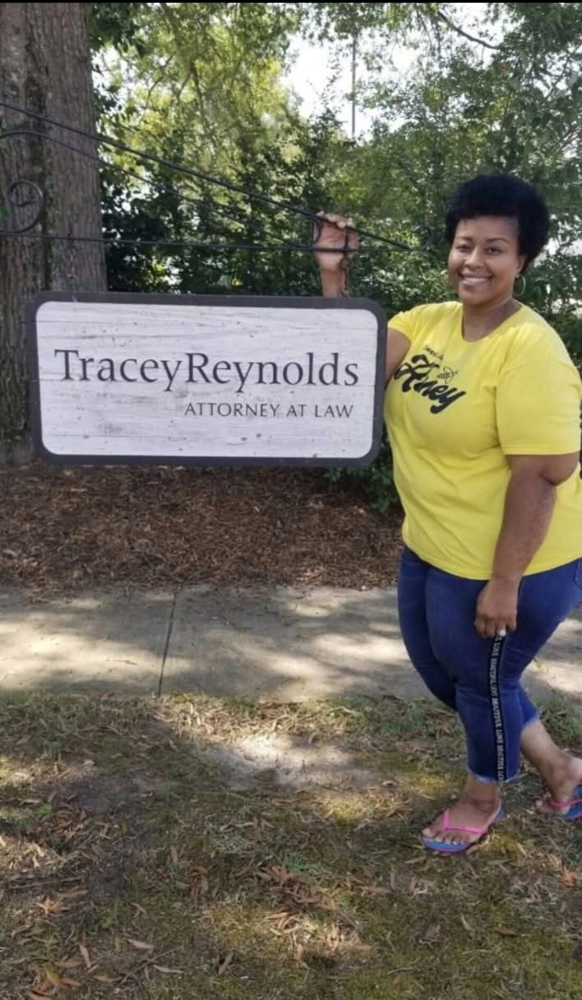
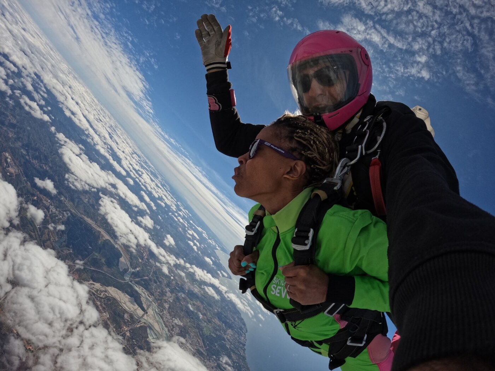

Founder and Origin
From the weight to the way through.
Her patients call her Dr. Shay. Most people know her simply as Shay. THE Baggage Exchange was founded by Dr. Shukairo Baker, DNP, a Black woman, a Doctoral prepared nurse practitioner, a business owner, and a trauma survivor. Her story is the brand.
She experienced childhood trauma, and by the time she turned 14, she had become a mother. By the time she turned 19, she was a mother of two. The youngest was born prematurely and subsequently developed severe special needs. But she did not let any of this break her. She kept pushing forward, though the bags she carried were more than heavy.
She went on to experience more trauma, setbacks, and losses, but instead of buckling under all of the pressure, she taught herself how to trade some of her heavier bags for lighter ones and embarked on a journey of Healing. Along her journey, she came across many different Opportunities to improve her circumstances, her life in general, and she embraced each one, even when it did not make sense. In doing so, she discovered her life’s Purpose and emerged from all of the heavy baggage Empowered. She coined her path, the H.O.P.E. Journey, and developed an entire system, the H.O.P.E. System, to help her release life’s heavy baggage. That system became her vehicle to navigate life’s traffic along the way.
Dr. Shay became a clinician many times over, earning her LCSW, LCAS, APRN, PMHNP, FNP, and CNE. She did not arrive there by luck. At each hard turn she made a choice. She set down a bag that was weighing her down and picked up one that was lighter, one that let her keep going. That is the whole method.
THE Baggage Exchange is not a metaphor she borrowed. It is the thing she lived.
She traded what weighed her down for what lifted her up, again and again, until the trading itself became the way through. She went from weighing more than 350 pounds to skydiving at 15,000 feet above Portugal at 143, proof in her own body that no baggage is too heavy to exchange. She is a survivor who has carried real weight. She builds from the Carolinas, and she tells her story with care and clear boundaries.


While she believes she has finally arrived at her destination of choice, her journey is far from over. She now teaches, counsels, and speaks to other women about THE Baggage Exchange method. She found her way through, one exchange at a time. Now she helps other women find theirs.